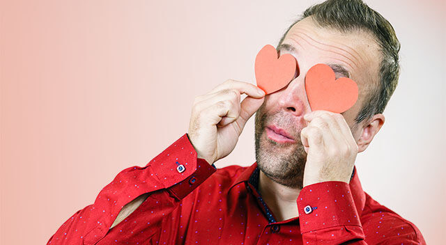

10 Ways to Give Your Eyes Some Love This Valentine’s Day
10 Ways to Give Your Eyes Some Love This Valentine’s Day
Feb 14, 2022

1. Be Mindful of the Food You Eat
Fill your plate with fresh fruits and veggies, lean proteins and whole grains. A well-balanced diet is good for your body and can lower your risk of eye disease .

2. Drink Plenty of Water
Drinking at least eight 8-ounce glasses of water each day will keep your body hydrated and your eyes moist — which is essential for preventing dry eye syndrome. To add some flavor to your water, try adding a splash of lemon juice or swap some of those glasses of water for an herbal tea or other non-caffeinated beverage. Caffeinated drinks have a dehydrating effect, so try to limit your coffee consumption as much as possible.

3. Exercise Regularly
Exercise is widely known for its physical and mental health benefits, but studies show that it can also lower your risk of serious eye conditions and diseases. Cardio exercise in particular has been shown to lower eye pressure and improve blood flow to the retina and optic nerve at the back of the eye. So grab your gym bag and get moving!
4. Don’t Smoke
If you’ve been thinking about quitting, there’s no better time than now. Smoking tobacco significantly raises your risk of developing sight-threatening eye diseases like diabetic retinopathy , cataracts and age-related macular degeneration (AMD), and can also lead to their early development.
5. Practice Good Makeup Hygiene
While wearing makeup can accentuate your eyes and make you feel more beautiful, it's important to note that if not used properly, certain makeup products can adversely affect eye health.
To keep your eyes and vision healthy, make sure to:
Clean your brushes and applicators regularly
6. Wear Sunglasses
Studies show that prolonged UV exposure can damage the eyes and lead to the development of sight-threatening eye conditions, like cataracts , macular degeneration and glaucoma, in the future.
7. Prevent Eye Injuries
About 90% of vision loss from eye injuries can be prevented by wearing the right eye protection.
Home » What’s New » 10 Ways to Give Your Eyes Some Love This Valentine’s Day
Valentine’s Day is the time to express your love and appreciation to those you care about most. But it’s also a great opportunity to take the time to pamper yourself — so why not start with your eyes?
Practice these 10 healthy lifestyle habits to help protect your eye health and vision.
1. Be Mindful of the Food You Eat
Studies show that foods high in vitamins A, C, E, Omega-3, lutein and zeaxanthin are especially beneficial for promoting eye health.
2. Drink Plenty of Water
3. Exercise Regularly
4. Don’t Smoke
Smoking also robs the body of the essential vitamins and minerals it needs to maintain eye health, and contains around 7,000 chemicals that can lead to eye irritation and dry eye.
5. Practice Good Makeup Hygiene
To keep your eyes and vision healthy, make sure to:
Toss any expired products, or eye makeup you've used during an eye infection
Only apply makeup to the outer margin of your eyelids
Remove your makeup before going to bed
Never share makeup or use in-store testers
Following these safety tips will help to lower your risk of eye infections and other serious complications.
6. Wear Sunglasses
Purchase a pair of stylish sunglasses with 100% UV protection and wear them any time you venture outdoors — the sun’s UV rays can penetrate the clouds and reflect off of snow, sand, water and pavement. So keep a pair of sunglasses next to your front door and a spare pair in your bag or car to ensure you have UV protection wherever you go.
7. Prevent Eye Injuries
Protective eyewear like sports goggles or glasses with polycarbonate lenses are designed with sturdy materials that are less likely to break or shatter while you play sports, and can protect your eyes from small particles that fly in the air when you mow the lawn or engage in DIY projects.
8. Learn First Aid for Eye Injuries
Let’s be real, accidents can happen even if we take all the right measures to protect ourselves. But knowing what to do in case of an unexpected eye injury can potentially save you or someone you love from permanent eye damage or vision loss.
Note: Any type of eye injury should be taken seriously, and promptly examined by an eye doctor.
9. Avoid Digital Eye Strain
Prolonged screen time can cause eye strain, dry eyes, blurry vision and headaches — and lead to a condition called digital eye strain, also known as computer vision syndrome.
Avoid symptoms of digital eye strain by limiting screen time as much as possible. If prolonged screen time is unavoidable, practice the 20-20-20 rule: set an alarm on your phone as a reminder to take breaks every 20 minutes to focus on an image at least 20 feet away, for at least 20 seconds.
10. Visit Your Eye Doctor
Regular eye exams are crucial when it comes to maintaining your eye health. With an eye exam, your eye doctor can identify early signs of sight-threatening eye diseases and conditions — enabling earlier treatment and increasing your chances for optimal results.
From all of us at Eye Shop in Houston, we wish you a Happy Valentine’s Day!
FOLLOW US
Q&A With Our Eye Doctor in Houston, Texas
What’s the difference between an eye exam and vision screening?
Vision screenings are basic tests of visual acuity, generally conducted by a school nurse or pediatrician. These screenings can’t identify many vision conditions that impact learning or work performance, and are unable to detect ocular health problems.
A comprehensive eye exam, which is performed by an eye doctor, includes tests for visual acuity and functional vision, as well as close examination of the inner and outer structures of the eye.
How often do I need to have an eye exam?
According to the American Optometric Association (AOA), it is important to have your eyes examined every one to two years, depending on your age, whether or not you wear glasses or contacts, your family history of eye disease, and your ocular health to date. Annual eye exams help your eye doctor monitor your eye health and easily identify any changes in your vision.
More from Eye Shop
Book your exam
Eye Shop - Located at 13130 Memorial Drive, Houston, TX 77079. Phone: 713-977-8464